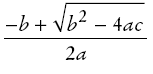

The Math class
- Math class: contains methods like sqrt and pow
- To compute xn, you write Math.pow(x, n)
- However, to compute x2 it is significantly
more efficient simply to compute x * x
- To take the square root of a number, use the Math.sqrt;
for example, Math.sqrt(x)
- In Java,

can be represented as
(-b + Math.sqrt(b * b - 4 * a * c)) / (2 * a)